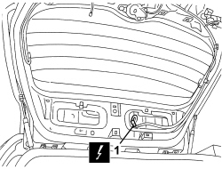
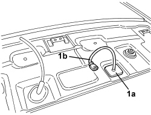

5550D86 THIRD BRAKE LIGHT CABLE LOOM - R.R. OR REPLACE
- Path
- Procedures > 55 ELECTRICAL EQUIPMENT > 5550 WARNING AND MANOEUVRING INDICATORS > 5550D BRAKE AND REVERSING LIGHTS > 5550D86 THIRD BRAKE LIGHT CABLE LOOM - R.R. OR REPLACE
- Kind
- repair procedure (removal / refitting; the operation number is the code)
- Applies to
- all engines; all production periods; only with equipment: Station Wagon
- Interactive page
- https://sloeber94.github.io/elrnDB/alfa/159/en/#/939005345
Applies to: all engines; all production periods; only with equipment: Station Wagon
 Removing
Removing
 Refitting
RefittingOp. 7040G36 BULB HOLDER FOR LOAD CARRYING COMPARTMENT lighting on tailgate - R.R.
Op. 7015A05 TAILGATE LOWER INTERIOR PANEL-R R
Op. 7015A06 TAILGATE UPPER INTERIOR PANEL - R.R.
Op. 7210G76 REAR SPOILER - R.R.
- Raise the tailgate.
1. Disconnect the electrical connection for the third brake light wiring.

Applies to: all engines; all production periods; only with equipment: Station Wagon
- Lower the tailgate.
1. Release the cable duct seal (1a) and keep the third brake light wiring (1b).

Applies to: all engines; all production periods; only with equipment: Station Wagon
Refitting
Removing- Check that the wiring is not damaged and that the individual conducts are correctly fastened to the connections.
If necessary, carry out continuity tests.
- Position the wiring and attach the cable duct seal.
- Raise the tailgate.
- Connect the electrical connection for the third brake light wiring.
- Lower the tailgate.
Op. 7210G76 REAR SPOILER - R.R.
Op. 7015A06 TAILGATE UPPER INTERIOR PANEL - R.R.
Op. 7015A05 TAILGATE LOWER INTERIOR PANEL-R R
Op. 7040G36 BULB HOLDER FOR LOAD CARRYING COMPARTMENT lighting on tailgate - R.R.